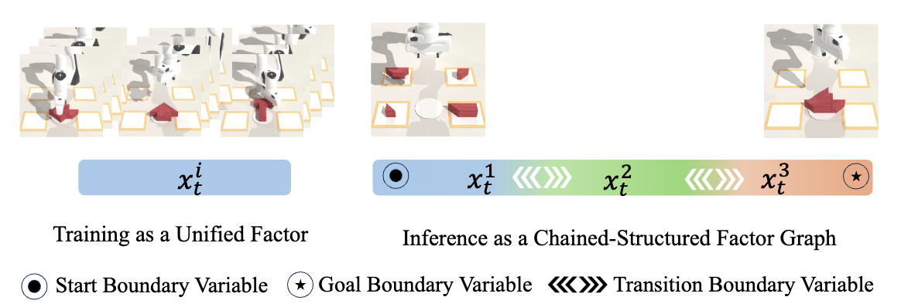

|
Woo Chul (Woochul) Shin Hello! I'm Woo Chul, a master's student majoring in CS at Georgia Tech, where I am advised by Prof. Danfei Xu. I earned my undergraduate degree at Seoul National University where I double majored in Artificial Intelligence and Economics. Feel free to drop me an email if you want to chat! |

|
ResearchI study 1) robot learning for robots to acquire and generalize skills from human videos and demonstrations. My research focuses on 2) dexterous manipulation with tactile and force feedback, making robots adapt to contact-rich interactions in dynamic environments. I want to develop 3) robot reasoning systems that plan, compose, and adapt skills over long horizons, moving beyond imitation toward purposeful autonomy. Ultimately, my goal is to build robots that can learn, think, and interact with humans in real-world environments. |

|
EgoEngine: From Egocentric Human Videos to High-Fidelity Dexterous Robot Demonstrations
Yangcen Liu*, Shuo Cheng*, Yiran Yang, Xinchen Yin, Woo Chul Shin, Mengying Lin, Danfei Xu In Progress Project Website EgoEngine is a powerful data engine that converts egocentric human videos into robot-executable demonstrations. By coupling an action branch (retargeting with refinforcement learning refinement) and a visual branch (arm-hand inpainting with robot rendering blending) under the same task, EgoEngine minimizes action and visual gaps to yield scalable, executable robot data. |
|

|
Compositional Visual Planning via Inference-Time Diffusion Scaling
Yixin Zhang, Yunhao Luo, Utkarsh Aashu Mishra, Woo Chul Shin, Yongxin Chen, Danfei Xu ICLR 2026 Paper / Project Website Compositional Visual Planning via Inference-Time Diffusion Scaling is a training-free framework that extends diffusion models from short-horizon to long-horizon robot planning. Instead of averaging independently denoised segments—which leads to instability in noisy spaces—it enforces boundary consistency on Tweedie estimates through a combination of synchronous and asynchronous message passing across a chain-structured factor graph. This inference-time approach produces globally coherent plans and significantly improves generalization to unseen start–goal tasks across diverse simulation environments. |

|
ImMimic: Cross-Domain Imitation from Human Videos via Mapping and Interpolation
Yangcen Liu*, Woo Chul Shin*, Yunhai Han, Zhenyang Chen, Harish Ravichandar, Danfei Xu, CoRL 2025 (Oral) CoRL H2R Workshop 2025 RSS Dex Workshop 2025 (Spotlight) Oral Talk / Paper / Project Website / Code ImMimic is an embodiment-agnostic co-training framework that bridges the domain gap between large-scale human videos and limited robot demonstrations. It uses Dynamic Time Warping to map human hand poses to robot joints and applies MixUp interpolation to generate intermediate domains for smoother domain adaptation. Evaluations across two parallel-jaw grippers (Robotiq, Fin Ray) and two dexterous hands (Ability, Allegro) demonstrate that ImMimic significantly improves task success and execution smoothness. |
|
|
SAIL: Faster-than-Demonstration Execution of Imitation Learning Policies
Nadun Ranawaka Arachchige*, Zhenyang Chen*, Wonsuhk Jung, Woo Chul Shin, Rohan Bansal, Pierre Barroso, Yu Hang He, Yingyan Celine Lin, Benjamin Joffe, Shreyas Kousik†, Danfei Xu† CoRL 2025 (Oral) Paper / Project Website SAIL (Speed-Adaptive Imitation Learning) is a framework for enabling faster-than- demonstration execution of policies by addressing key technical challenges in robot dynamics and state-action distribution shifts. SAIL achieves up to a 4× speedup over demonstration speed in simulation and up to 3.2× speedup on physical robot. |

|
What Matters in Learning from Large-Scale Datasets for Robot Manipulation
Vaibhav Saxena, Matthew Bronars*, Nadun Ranawaka Arachchige*, Kuancheng Wang, Woo Chul Shin, Soroush Nasiriany, Ajay Mandlekar†, Danfei Xu† ICLR 2025 Paper / Project Website / Code / Data MimicLabs is a data generation framework to procedurally emulate key sources of diversity in robot datasets. Using this framework, we generate large-scale datasets with controlled variations to analyze how collection diversity and retrieval strategies impact downstream policy learning. |
Work ExperienceSoftware Development Engineer Intern, Amazon (May 2025 -- Aug. 2025) Bellevue, WA * Developed AI Orchestration and Responsible AI components for Amazon Nova AI models. Graduate Research Assistant, Georgia Tech (Fall 2024 -- May 2026) Atlanta, GA / Lab: Robot Learning and Reasoning Lab / Advisor: Danfei Xu Software Engineer, Kakao (Jun. 2024 -- Jul. 2024) South Korea * Developed an Kubernetes-based machine learning platform for AI model training and inference. Software Engineer, Kakao Brain (Aug. 2022 -- May. 2024) South Korea * Developed an Kubernetes-based machine learning platform for AI model training and inference. Software Engineer Intern, Elysia (Mar. 2022 -- Jun. 2022) South Korea * Built backend server and smart contracts for a Ethereum-based crowdfunding service. Software Engineer Intern, Kakao Brain (Dec. 2021 -- Mar. 2022) South Korea * Built an AI resume creation service using GPT-2. Software Engineer Intern, SNUAILAB (Dec. 2020 -- Mar. 2021) South Korea * Developed a YOLOv4-based image labeling system to annotate pig farm data. |
Teaching ExperienceCS4644/CS7643, Deep Learning, Georgia Tech Fall 2024, Spring 2025, Fall 2025, Spring 2026 M2177.007100, Field Application Research of Blockchain 2, SNU Spring 2022 M2177.007000, Field Application Research of Blockchain 1, SNU Fall 2021 L0444.000400, Basic Computing: First Adventures in Computing, SNU Spring 2021, Summer 2021 |